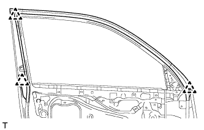
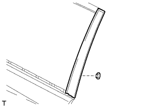
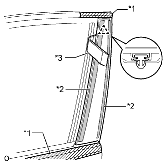

FRONT DOOR WINDOW FRAME MOULDING > REMOVAL |
| 1. DISCONNECT CABLE FROM NEGATIVE BATTERY TERMINAL |
| Condition | Waiting Time |
| Vehicle enrolled in safety connect system | 6 minutes |
| Vehicle not enrolled in safety connect system | 1 minute |
| 2. REMOVE FRONT DOOR BELT MOULDING LH |
Remove the front door belt moulding (Click here).
| 3. REMOVE FRONT DOOR WEATHERSTRIP LH |
|  |
Detach the 3 clips and remove the upper part of the front door weatherstrip so that the moulding can be removed.
| 4. REMOVE FRONT DOOR REAR WINDOW FRAME MOULDING LH |
| Item | Temperature |
| Vehicle Body | 40 to 60°C (104 to 140°F) |
| Window Frame Moulding | 20 to 30°C (68 to 86°F) |
|  |
Remove the door window frame moulding clip.
|  |
Put protective tape around the front door rear window frame moulding.
Using a moulding remover, detach the clip and remove the double-sided tape to remove the front door rear window frame moulding.
| *1 | Protective Tape |
| *2 | Double-sided Tape |
| *3 | Moulding Remover |